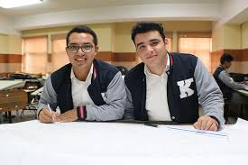

3 Años
3 Años
Ciclo Básico
Educación General Básica con orientación técnica y excelencia académica para jóvenes.
- Formación integral
- Orientación vocacional
- Valores cristianos
Somos un Centro Educativo privado, no lucrativo, dedicado a la formación técnica profesional de jóvenes y adultos. Transformamos vidas a través de la educación de calidad y el trabajo bien hecho.

Solicitudes recibidas en 2024
Formación técnica y académica que te prepara para el éxito profesional. Elige tu camino hacia el futuro.
3 Años
Educación General Básica con orientación técnica y excelencia académica para jóvenes.
 Popular
Popular
Preparación técnica y académica completa. Egresa listo para trabajar o continuar en la universidad.
 Avanzado
Avanzado
Programas especializados con aval universitario para profesionales que buscan crecer.
Más de 60 años formando profesionales que construyen un mejor país.

Kinal es un Centro Educativo privado, no lucrativo, dirigido a la formación técnica profesional de jóvenes y adultos, de beneficio colectivo y asistencia social en favor de los sectores más necesitados de la comunidad.
Nuestro valor fundamental es enseñar a realizar el trabajo bien hecho, que sea la base de la superación de alumnos y el medio para servir a los demás.
Educación de primer nivel
+30 especialidades
Formación integral
+600 ofertas anuales
Historias de éxito que inspiran a nuevas generaciones.
Kinal me dio las herramientas técnicas y los valores para construir mi carrera. Hoy soy ingeniero gracias a la formación que recibí aquí.

Ingeniero Industrial, Promoción 2015
La formación en valores y la disciplina que aprendí en Kinal han sido fundamentales en mi desarrollo profesional y personal.

Técnico en Diseño, Promoción 2018
Gracias a la bolsa de empleo de Kinal conseguí mi primer trabajo incluso antes de graduarme. Una institución que realmente te prepara para el éxito.

Técnico en Mecánica, Promoción 2020
Empresas que confían en nuestros egresados


¡Las empresas te están buscando! Durante 2024 recibimos más de 600 solicitudes de trabajo para nuestros egresados.
Ver Ofertas de TrabajoCada donación que haces ayuda a la educación de un joven guatemalteco de escasos recursos a tener una educación de calidad.
Apóyanos AhoraMantente informado sobre las últimas noticias y eventos de Kinal.

Reflexiones y actualizaciones semanales del Patronato KINAL para nuestra comunidad educativa.

Celebración especial que unió a estudiantes, profesores y familias en un momento de reflexión y gratitud.

Kinal firma convenios con empresas líderes para garantizar oportunidades laborales a nuestros egresados.
El nuevo diseño utiliza una jerarquía visual clara con gradientes modernos, sombras sutiles y espaciado profesional. Los elementos flotantes y las animaciones suaves crean una experiencia inmersiva que el diseño original no ofrece.
A diferencia del original, este rediseño está completamente optimizado para todos los dispositivos. La navegación, cards y secciones se adaptan fluidamente desde móviles hasta pantallas grandes.
Hero section impactante con estadísticas visibles, CTAs claros, navegación sticky con efecto glassmorphism, y microinteracciones que guían al usuario. Todo diseñado para convertir visitantes en estudiantes.
Las estadísticas de impacto, testimonios con fotos reales, sección de partners y la presentación de programas transmiten profesionalismo y confianza que el diseño original no logra comunicar efectivamente.
Contenido organizado en secciones claras con títulos descriptivos, badges informativos y flujo lógico. El usuario encuentra lo que busca sin fricciones.
Efectos de scroll reveal, hover states sofisticados, transiciones suaves y elementos animados que hacen la experiencia memorable y diferenciadora frente a competidores.